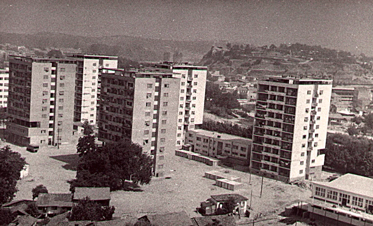
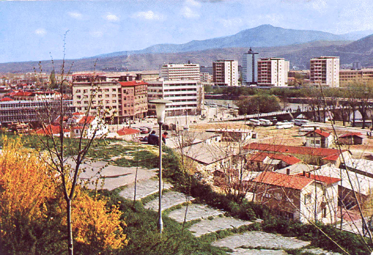
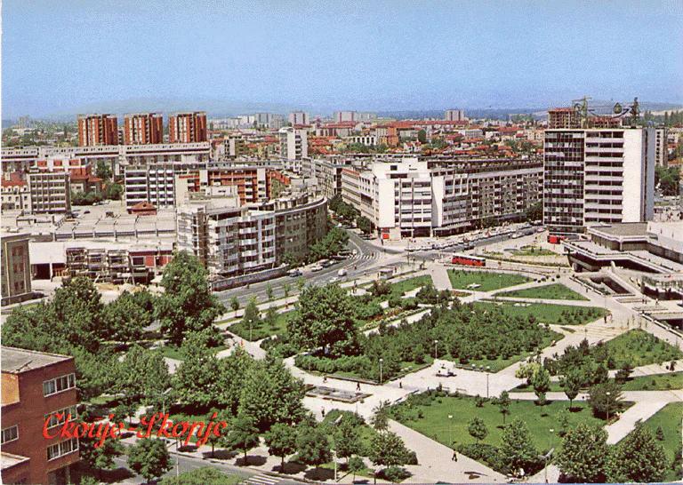
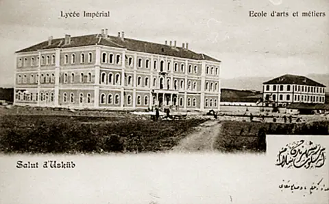

Трг
- Сценарио
- Димитрије Османли, Симон Дракул
- Камера
- Киро Билбиловски
- Година
- 1964
- Трајање
- 00:06

Поглед на град, са Сахат-кулом десно и Гази Иса-беговом џамијом лево, са махалом „Сахат-кула“. (1940-их)

Бетонски мост код данашњег хотела „Гранд“. У позадини се види скопска тврђава - Кале. (1950-их)

Панорама Скопља. (1950-их)

Панорама Скопља. У првом плану је Бетонски мост (код данашњег Гранд хотела), а у позадини Камени мост и објекти: Официрски дом и Народна банка. Десно горе види се скопска тврђава - Кале. Кеј је уређен као шеталиште и саобраћајница за возила, са уређеним зеленилом између њих. (1950-их)

Поглед на Бетонски мост (код данашњег Гранд хотела). У првом плану је Пајко махала. У позадини је скопска тврђава - Кале, а десно од ње Мустафа-пашина џамија. (1950-их)

Скопље, 1950-их, са новим стамбеним објектима. У средини је простор данашње Зелене пијаце.

Панорама града Скопља. У првом плану је Трг слободе. Улица према реци Вардар је „Васил Главинов“. На првом углу трга види се улаз основне школе „Гоце Делчев“. - 1950-их

Трг „Слобода“. У позадини се виде Официрски дом и Народна банка. - 1950-их

Центар Скопља пре земљотреса - око 1960. године.

Панорамски снимак централног градског подручја Скопља из авиона. Трг са Официрским домом, Народном банком и привредном трговинском комором. На десној страни је главна пошта, а лево доле види се кров Народног позоришта. Фотографија је снимљена 1950-их.

Панорамска фотографија централног подручја Скопља, - 1950-их

Снимак централног градског подручја из авиона пре земљотреса - 1963. година. Између кула (горе десно), где се данас налази тржни центар, види се црква „Цар Константин и царица Јелена“.

Панорама дела старе скопске чаршије, 1950-их.

Поглед на део Бит пазара и старе чаршије. Изнад њих се види Мустафа-пашина џамија. (1950-их)

Поглед на центар Скопља. Камени мост се још увек користи као саобраћајна комуникација. Фотографија је снимљена убрзо после катастрофалног земљотреса 26. јула 1963. године.

Скопље 1968. године. Локација данашњег Градског тржног центра.

Панорамска фотографија центра града. Трг се још увек користи као паркинг за моторна возила.
(1960-их)

Панорама централног дела града са регулацијом Вардара, фотографисана са скопске тврђаве - Кале. (1970-их). У првом плану су Камени мост, робна кућа, „Пелистер“ и други објекти.

Поглед са скопске тврђаве - Кале ка центру града Скопља. Шеталиште на десној обали Вардара пуно је народа. (1970-их)

Поглед са скопске тврђаве - Кале ка центру града Скопља. (1970-их)

Поглед на леву обалу Вардара, одмах поред Каменог моста. У доњем делу фотографије види се део цркве Св. Димитрија. (1970-их)

Поглед на леву обалу Вардара, одмах поред Каменог моста. У доњем делу фотографије види се део цркве Св. Димитрија. (1980-их)

Панорама Скопља. У првом плану је мали парк „Жена борац“. У доњем делу лево види се део зграде Градске болнице и део зграде Скупштине. - 1980-их.

Парк „Жена борац“ са Градским тржним центром, са стамбеним и јавним објектима града Скопља. - 1980-их.

Поглед на булевар и мост „Гоце Делчев“ са надвожњаком у првом плану. У позадини су Телекомуникациони центар и део стамбеног комплекса „Градски зид“. (1980-их)

Поглед на централно градско подручје. У првом плану су део банака, мост „Револуција“ и позориште. У позадини се виде Бетонски мост, Камени мост и Телекомуникациони центар - 1980-их.

Поглед на централно градско подручје са крова данашњег Завода за финансије. У даљини се види Камени мост. На десној страни разгледнице види се данашње позориште, а изнад њега назире се скопска тврђава - Кале - 1980-их.

Скопље крајем 1970-их. Мост код данашњег хотела „Гранд“. На левој страни уздиже се зграда Македонске радио-телевизије, а десно зграда данашњег Завода за платни промет.

Панорама Скопља са падине планине Водно. У првом плану је хотел „Панорама“. (1980-их)

Панорама Скопља ноћу, са падина планине Водно. (1980-их)

 Аквадукт4 разгледнице
Аквадукт4 разгледнице Кале30 разгледница
Кале30 разгледница Мостови60 разгледница
Мостови60 разгледница Кеј58 разгледница
Кеј58 разгледница Трг46 разгледница
Трг46 разгледница Објекти66 разгледница
Објекти66 разгледница Хришћански храмови19 разгледница
Хришћански храмови19 разгледница Муслимански објекти33 разгледнице
Муслимански објекти33 разгледнице Официрски дом29 разгледница
Официрски дом29 разгледница Позориште28 разгледница
Позориште28 разгледница Железничка станица13 разгледница
Железничка станица13 разгледница
Школе36 разгледница Паркови12 разгледница
Паркови12 разгледница Пијаце18 разгледница
Пијаце18 разгледница Улице38 разгледница
Улице38 разгледница Панорама I60 разгледница
Панорама I60 разгледница Панорама II30 разгледница
Панорама II30 разгледница Колажи55 разгледница
Колажи55 разгледница Поплаве9 разгледница
Поплаве9 разгледница Земљотрес27 разгледница
Земљотрес27 разгледница Скопље 200026 разгледница
Скопље 200026 разгледница